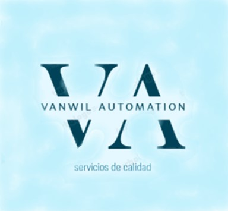

Vanwil Atomation Servicios de automatización, robótica y gestión de proyectos-
INDUSTRIA 4.0
Soluciones tecnologicas de la industria 4.0 para fabricación inteligente

Que es la industria 4.0?
Quieres saber más?, contactanosConcepto de industria 4.0
- Ahora estamos en la Cuarta Revolución Industrial, que lleva al futuro la automatización y la informatización.
- Está potenciada por el Internet de las Cosas Industrial (IIoT) y los sistemas ciberfísicos –sistemas inteligentes y autónomos que utilizan algoritmos basados en computadoras para monitorear y controlar cosas físicas como maquinaria, robots y vehículos–.
9 Pilares de industria 4.0